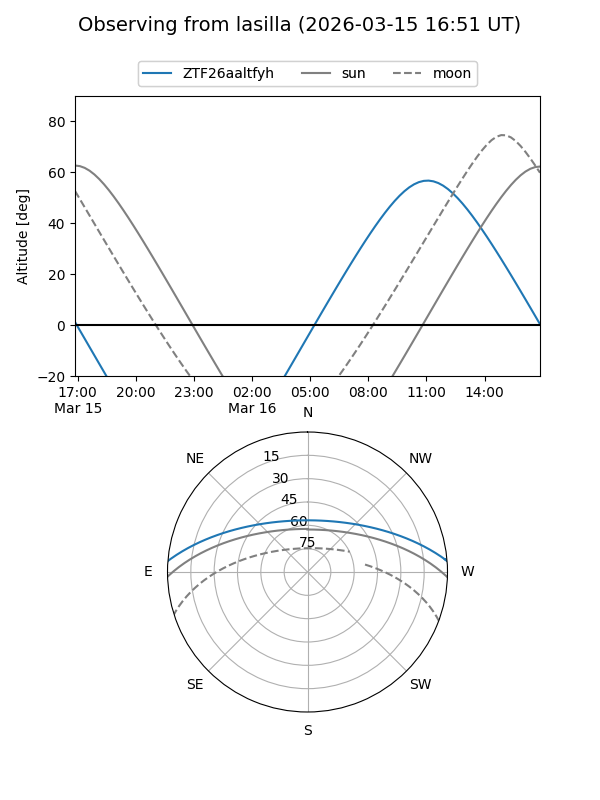
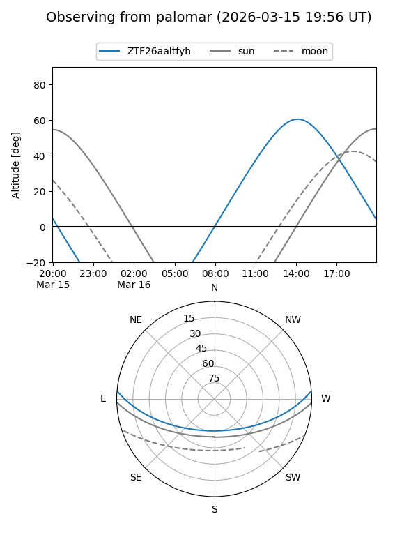

ZTF26aaltfyh
Target ZTF26aaltfyh at 2026-03-15 12:40
Aliases and brokers:
FINK: link
Lasair: link
ALeRCE: link
alt names
ZTF26aaltfyh (ztf,fink_ztf)
Coordinates:
equatorial (ra, dec) = 268.7655,+3.97849
equatorial (HMS+DMS) = 17:55:03.71,+03:58:42.58
galactic (l, b) = (30.0315,+14.34968)
Flags:
Photometry:
last ztfg=19.20
1 ztfg detections
Lightcurve
Visibility


Additional plots